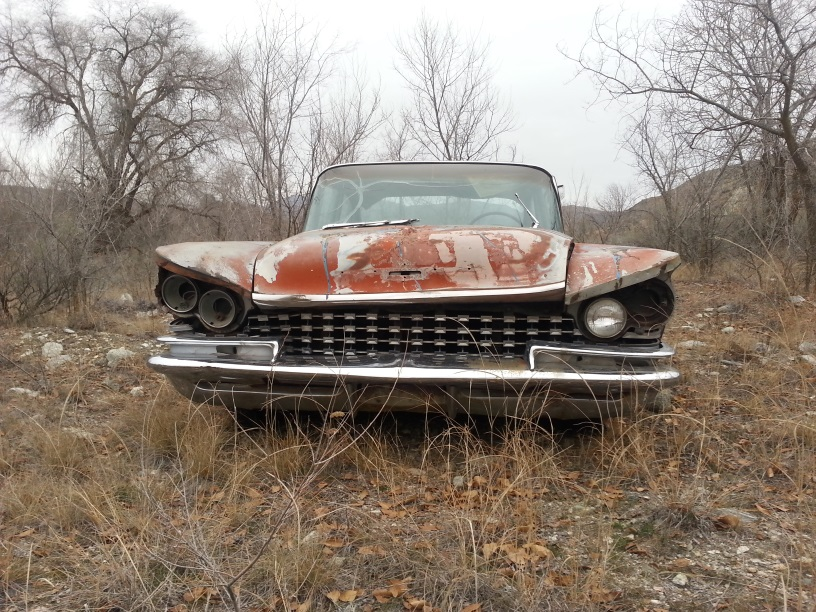
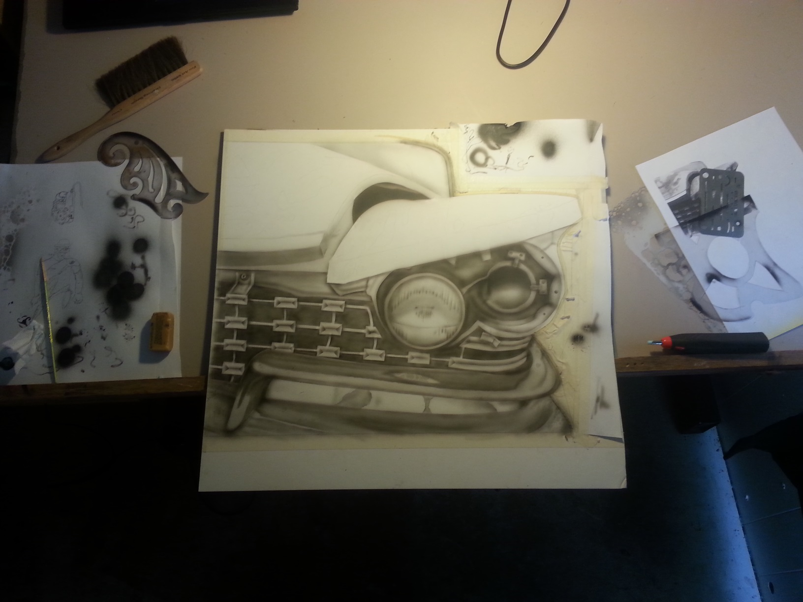
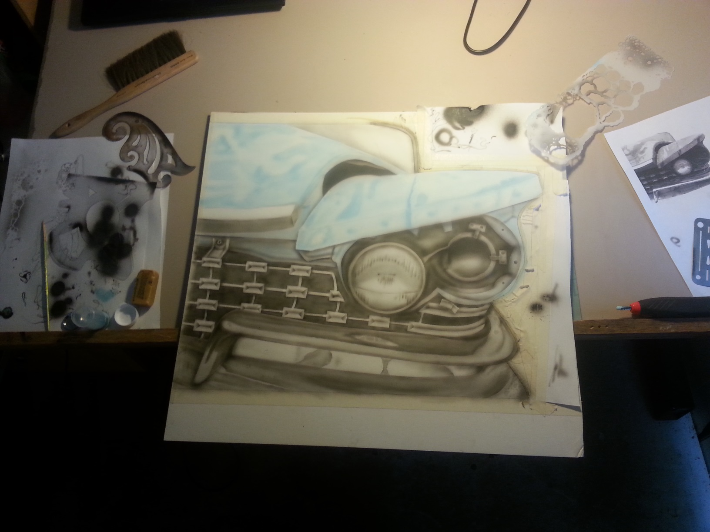
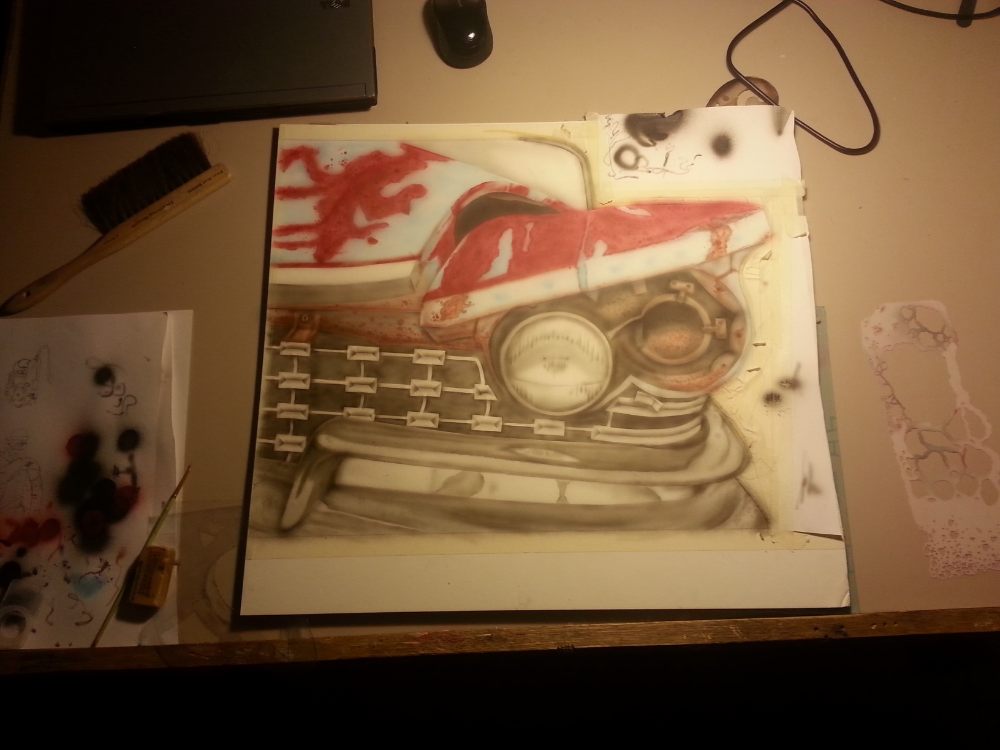
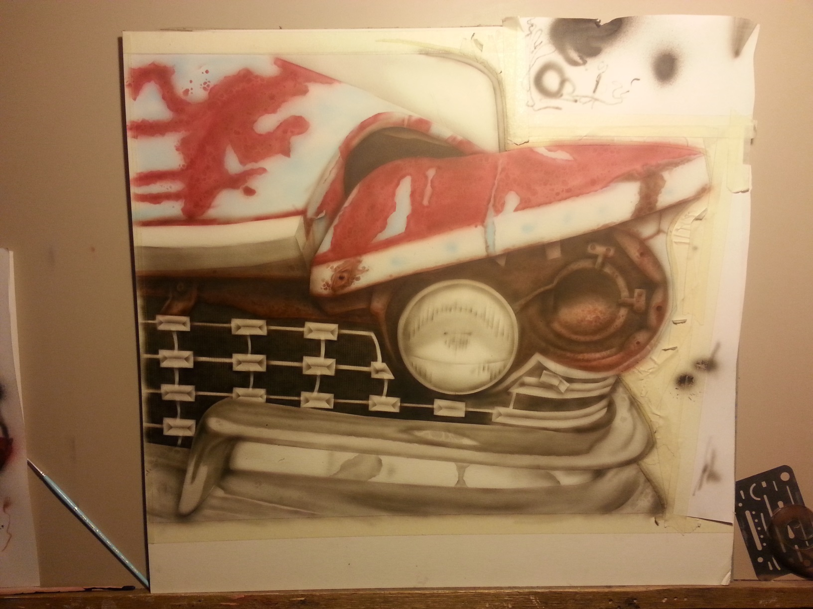
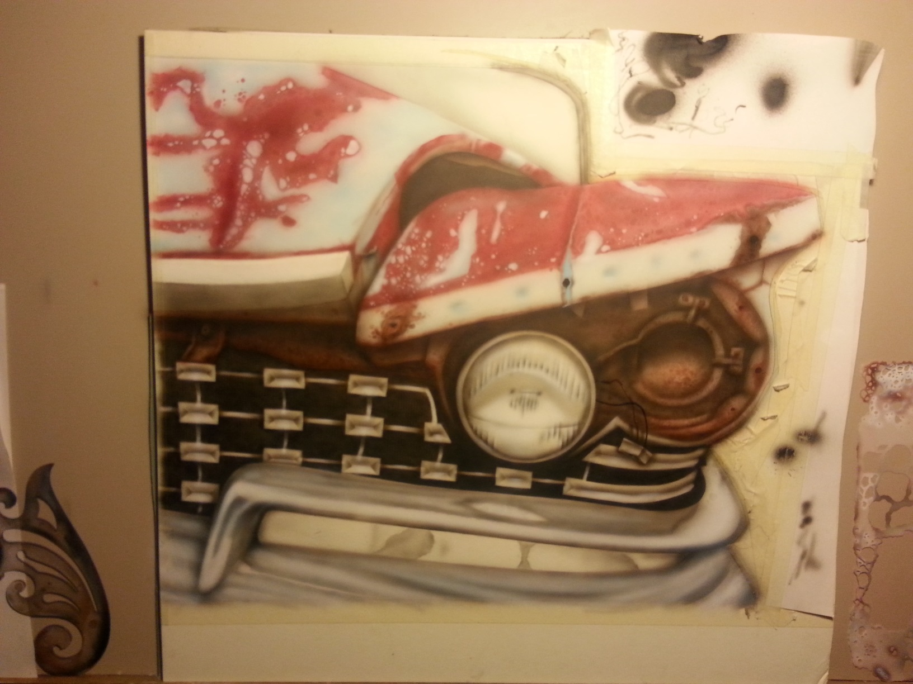
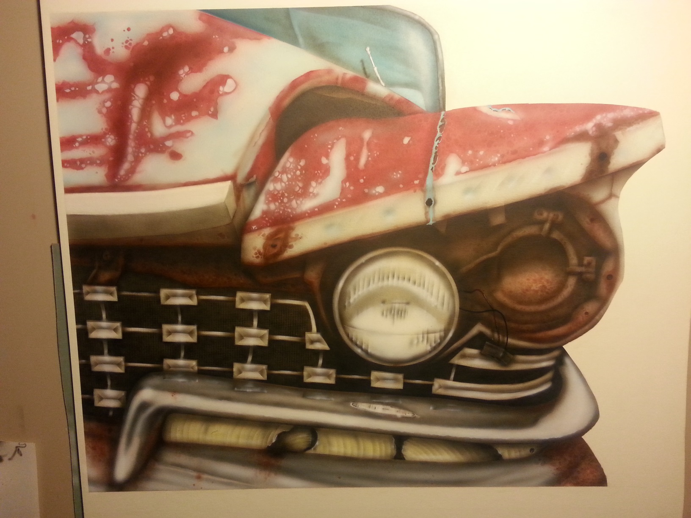
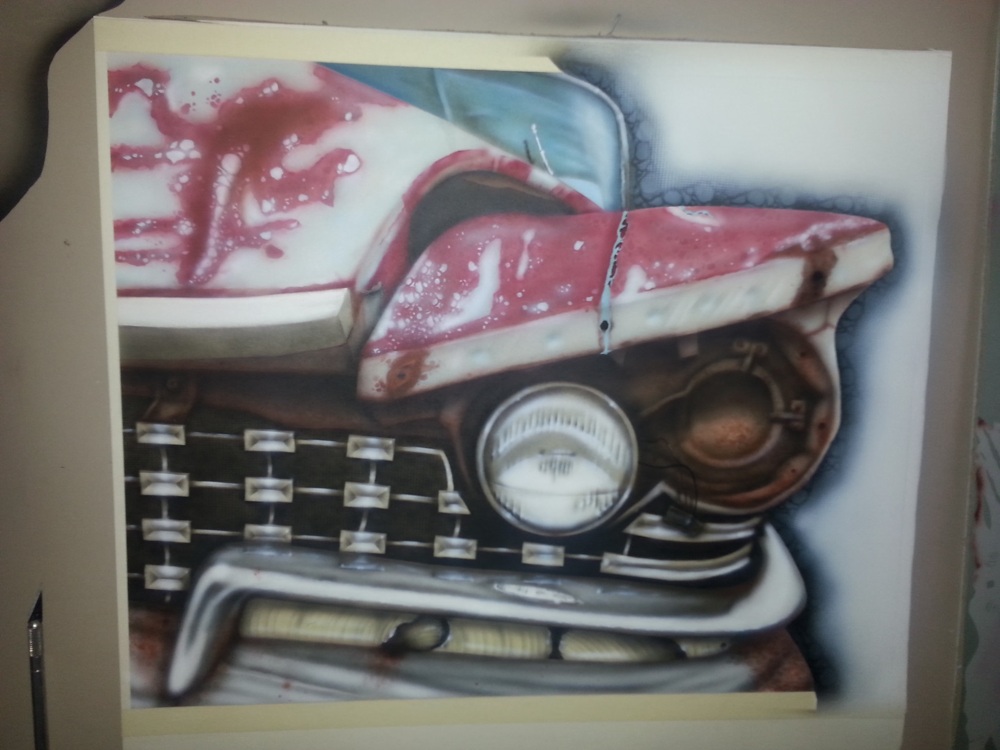

This will be a quick a dirty progression the steps I used (well at least from what I can remember).
I was driving back from Brewster and saw this beauty sitting off in a field:

And I thought I wanted to drag it home, but I already had too many car projects sitting in the backyard
and the wife may not like another. So I took lots of Pics, when I got home, I decided I'd like to paint
that. I started off with a basic pencil outline and started working on gray and black tones for the base
paint.

Color is a slow process with me. Too much at one time and you might as well throw it out, so light layers
building a little at a time.






And then a final digital border cleanup and removing the cameria's light reflection:
 I know I have a write up on paints and resources I used, I just have to find it, and when I do, I'll
post it here.
I know I have a write up on paints and resources I used, I just have to find it, and when I do, I'll
post it here.